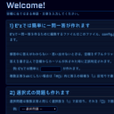
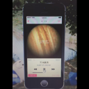

wassan128.github.io
$ whoami
- I'm わっさん.
- Born in 神奈川, live in 沖縄.
- Graduated 専攻科 at National Institute of Technology, Okinawa.
$ interested
- + Web(both front-end and back-end すこ.)
- + Security(baby CTF player @EAnbai)
- + Acoustic Guitar
$ links
$ activity
$ gallery
-
chrosche
新しいタブ上で予定・メモを管理できるChrome拡張. 無料. ChromeにGoogleアカウントでログインして使えば, 異なる端末間でメモが共有できる. メモの追加・編集・削除に加え#(ハッシュタグ)機能も備えている(store link:chrosche)
-
MeltDowner
静的サイトジェネレータもどきで，現在(2019年1月)更新しているブログはこれを用いて出力している．以前まで使っていたHexoを意識しつつ製作中(github link:MeltDowner)
-
近況圧縮575
直近数百ツイートを「5・7・5」の17文字に圧縮するTwitter連携Webアプリ(app link:近況圧縮575)
-

E'z
ブラウザで使える一問一答作成・回答ツール. config.jsをフォーマットに沿って編集することで簡単に問題を作ることができる(github link:E'z)
-
るっく＠
electron製のOutlookメールクライアント. 背景色テーマ選択やお気に入り登録などの機能実装済. 開発途上(github link:るっく＠)
-

1ph0n3
Windows Media Playerのiphone風スキン. 当初iphone4sモデルで作成していたものを, iphone5sをモデルに更新(blog link:1ph0n3)
-
wassan128.github.io
CSS3アニメーションを使ったこのサイト(もう少し種類を増やしたい). スクエア型背景写真は随時追加更新予定
-
ペンギンの道標
技術ブログ. VuePressで構築した三代目